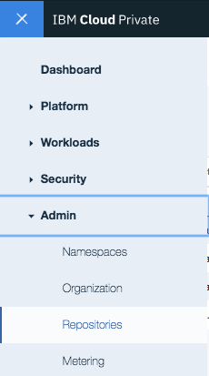
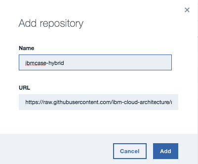
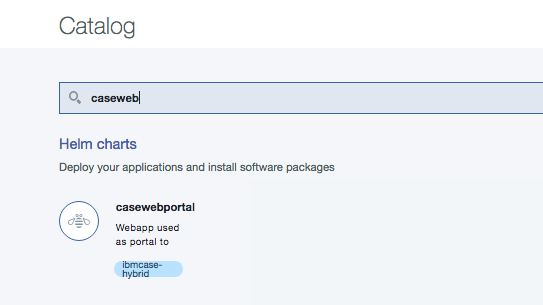

Build your own helm repository for ICP
Github can be used to persist the helm charts and then reference it as source for the ICP catalog. We are presenting in this note how we did it.
Cloud Native chart
The webapp in the 'case' portal is packaged as helm charts. The commands used were:
$ helm init casewebportal
The command build the chart named
$ helm package casewebportal
charts folder in this project.
Build a chart repository
A chart repository is an HTTP server that houses an index.yaml file and optionally some packaged charts. A chart repository consists of packaged charts and a special file called index.yaml which contains an index of all of the charts in the repository.
So first you need a index.yaml file which declares the app you want to be visible in the ICP catalog and second reference the repository from your ICP install.
index.yaml
The structure may look like this. It can be created once you have copy all the charts to the same folder using the commands
helm index
apiVersion: v1 entries: casewebportal: - apiVersion: v1 created: 2017-10-23T17:25:09.954656969-07:00 description: Webapp used as portal to demonstrate hybrid integration digest: 2a8f11e4163c4c496280fc5441facf85648e0bcbee200345b7b8cae78d294ec2 name: casewebportal home: https://github.com/ibm-cloud-architecture/refarch-caseinc-app keywords: - Hybrid - IBM - browncompute maintainers: - email: boyerje@us.ibm.com name: Jerome Boyer name: ibm-case-brown-web tillerVersion: '>=2.4.0' urls: - https://raw.githubusercontent.com/ibm-cloud-architecture/refarch-integration/charts/casewebportal-0.0.3.tgz version: 1.0.3
Reference the repository
You can do that using the web interface of the ICP admin console: in the upper-left corner, click the menu and expand the Admin section. Click Repositories to specify a new Helm chart repository:

and add the repository using the url to the docs/charts folder

As an alternate using the following command will have the same result
$ kubectl repo add ibmcase-hybrid https://raw.githubusercontent.com/ibm-cloud-architecture/refarch-integration/master/docs/charts
Once done accessing the catalog and searching for caseweb you should see the application in the catalog:

You can then install it from the catalog using the configure button or use the command:
$ helm install --name casewebapp ibmcase-hybrid/casewebportal